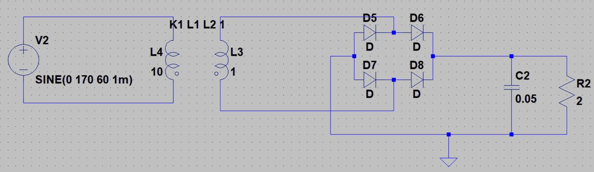

—Workshop 2
The second workshop was: Introduction to Simulation and Schematic Tools. I chose a basic circuit, an AC/DC converter, and showed the attendees how to simulate the circuit in LTSpice, then how to create the schematic using DipTrace.
LTSpice
I taught the attendees how to place parts, connect them with wires, run a transient simulation, and probe voltages and currents in the circuit.
DipTrace Schematic
As an introduction to schematic capture, I showed the attendees how to use components from a component library and place components and connectors to make a basic schematic.